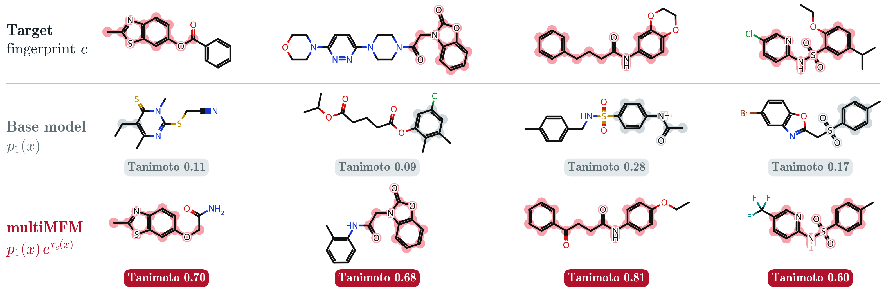
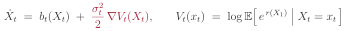
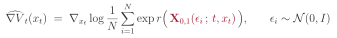
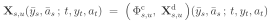
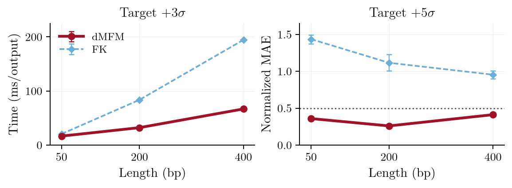

Inference-time Steering in Biological Design with Multimodal Meta Flow Maps
One posterior sampler per generator, trained once. Change the reward at sampling time to steer a molecule or a DNA sequence toward a new target.
1Harvard University, 2Princeton University, 3Kempner Institute, 4IAIFI
Preprint, 2026. ⋆Equal contribution.
Scroll to explore
Abstract. Biological design problems naturally have continuous (e.g. molecular structures), discrete (e.g. DNA residue types) and often both modalities (e.g. protein structure-sequence co-design). Diffusion and CTMC-based methods have been developed for multimodal generation, and, for cross-modal tasks, the two are typically combined. However, it remains challenging to adapt these methods at inference-time to fulfill design constraints. Recent developments of one-shot samplers such as Meta Flow Maps (MFM) have demonstrated high controllability for image generation, showcasing the power of inference-time steering with accurately estimated reward gradients. Here, we adapt Meta Flow Maps to biological domains, and develop MFM framework both in discrete (dMFM) and multimodal settings (multiMFM). We demonstrate dMFM by designing DNA sequences with a target mechanical property. MultiMFM trained on the molecular datasets QM9 and GEOM-Drugs are applied to design molecules of a given physical property. In both cases, our steering algorithms improve target attainment using one reward-independent MFM per base generator.
Samples

The idea
Look ahead, then steer
A flow model turns noise into a sample one step at a time, and partway through many endings are still possible. A Meta Flow Map draws those endings in a single network call: given the current state xt, it returns samples from the posterior p1|t(· | xt). A reward scores these look-aheads, and the scores come back as a gradient that bends the next step. The map is distilled once from the base generator and never sees a reward, so a new objective needs no retraining.
A molecule has continuous coordinates and discrete atom types. multiMFM draws both parts of every look-ahead jointly, so a reward on one part steers the other. In the toy below, each mode of the continuous coordinate y comes with its own category a. Choose the category to reward and drag λ.
What the animation shows
The animated version of Figure 2 in the paper, computed live on a toy with a closed-form posterior. The data has four components: a Gaussian mode in y, each paired with one vertex ek of the simplex, which for four categories is a tetrahedron. Noise is Gaussian in both coordinates, drawn below the simplex for legibility as in the paper’s figure, and the base flow follows the linear interpolant xt = (1 − t)x0 + t x1 with its exact velocity. Left: the continuous coordinate, with flow time running from the noise density p0 at the front to the data density p1 at the back. Right: the discrete coordinate of the same sample, moving from the noise cloud to a vertex. The dashed blue line joins the two views of the one state xt = (yt, at). Look-aheads: the thin lines are 32 joint draws (y1, a1) from the posterior p1|t(· | xt), made from fixed noises εi so that they move continuously with the state, as the outputs of a Meta Flow Map do. Each line in the left view has a partner in the right view. The fan is wide early on and closes as the sample commits. Steering: at t = 0.28 the reward r(x1) = λ for look-aheads ending on the chosen category is switched on. Those look-aheads turn rose, and the gold arrows show the paper’s gradient-free estimate of the value gradient: the reward-weighted mean of the look-aheads minus their plain mean. The red path adds that correction to the base velocity; the dashed path is the same noise without it. Because position and category are coupled, rewarding a category bends the continuous path as well. At λ = 0 the two paths coincide, and a draw with no look-ahead on the rewarded mode cannot be steered. Each loop ends on a still composed like the paper’s figure. In the QM9 and DNA experiments the look-aheads come from the learned map, 32 per step.
Two rewards, one generator. Each particle has a continuous position in the square and a discrete colour drawn jointly from one multiMFM. The Norway reward steers colour alone, so the square survives; the smiley reward steers position and colour together. Both panels start from the same noise.
What this toy is doing
The toy of Figure 1 in the paper, run live rather than replayed. The state is x = (y, c) with a position y in the square and a colour c over {blue, white, red}. The base distribution is uniform in both, so the posterior p1|t(· | xt) is known exactly: the position endpoint is a truncated Gaussian on [−1, 1] per coordinate, and the colour endpoint is categorical with probability proportional to exp(t ct[k] / (1−t)2). Look-aheads are exact draws from that posterior, and the correction is the same gradient-free estimator as the figure above: the reward-weighted mean of the look-aheads minus their plain mean.
Two things are tuned, as they are in the paper. The ideal coefficient is replaced by a constant guidance strength with a cap on how far one step may move a particle, and guidance acts only inside a window in t. The colour coordinate also starts from a wider Gaussian than the position does. Without that, the colour posterior collapses by t ≈ 0.85, before the position posterior reveals where a particle will land, so every look-ahead agrees and the reward has nothing left to steer with.
Steering is not exact, and it is not meant to look exact: sampling stays stochastic, so some particles end on the wrong colour or away from a feature. The readout gives the mean reward in both panels, which is the honest summary — for the flag it rises from about 0.33, the value a random colour earns, to about 0.8.
Method
A value gradient from posterior samples
To sample the reward-tilted distribution p1(x1) er(x1) with a frozen flow model bt, it is enough to add the gradient of a value function to its velocity. The value function is an expectation over the endings still reachable from xt, which is exactly what a Meta Flow Map samples.


sample x_0 ~ p_0
for k = 0, ..., T - 1:
# N joint look-aheads (y_1, a_1) from the posterior p_{1|t}(· | x_k), one map call each
x1_i = X_{0,1}(ε_i ; t_k, x_k), ε_i ~ N(0, I), i = 1, ..., N
# value gradient from their rewards, one part per modality
g = ∇_x log (1/N) Σ_i exp r(x1_i)
# frozen base velocity plus guidance; C is the guidance window and gradient cap
x_{k+1} = x_k + (t_{k+1} - t_k) [ b_{t_k}(x_k) + γ C_{t_k}(g) ]
return x_T
How the pieces fit, in three steps
The tilted sampler. For the linear interpolant with a Gaussian source, the ODE above with σt2 = 2(1 − t)/t samples the tilted distribution exactly when the drift and the value function are exact. Learned maps, finite N, discretization and the practical window and cap Ct introduce approximation error.
Discrete Meta Flow Maps. A discrete flow carries Gaussian noise to the vertices of a simplex, one vertex per token. We extend GLASS posterior sampling to this setting and distill its inner flow into a one-shot map, dMFM, parameterized by a denoiser that stays on the simplex and trained with a diagonal loss plus Eulerian self-distillation.
Joint look-aheads. multiMFM pairs a continuous MFM with a dMFM. Both parts see the joint inner and outer state, so no independence between modalities is assumed, and each modality is steered by its own partial gradient of the one value function.

For hard-token DNA sequences the paper also uses a gradient-free form of the estimator: a softmax of the rewards weights the look-aheads, with no derivative of the reward or the sampler. That is the form the animation above draws.
Results
Molecules and DNA, one sampler each
Molecular properties on QM9. One multiMFM posterior sampler, distilled in 2.5 hours on one H100, serves every property objective. Its error is below the published TFG-Flow reference on all six properties. To steer two properties at once we add their squared errors in a single reward: when targeting the energy gap and the dipole moment together, gap error falls from 981 to 525 meV and dipole error from 1.046 to 0.706 D relative to our TFG-Flow rerun, with more structures passing PoseBusters checks.

DNA sequences. For DNA we use the discrete map, dMFM. One predictor guides 50-base sequences toward a requested cyclizability, a measure of how readily DNA forms a loop, and a second predictor trained on disjoint parent sequences scores the designs. Error falls from 1.174 to 0.153 at the +1 target and from 0.833 to 0.117 at the −1 target. In a separate four-motif task we time each method at the fastest tested setting that meets fixed accuracy, diversity and uniqueness criteria.

Full tables
Table 1 QM9 property guidance, mean absolute error. Energies in meV. Published reference values are from the TFG-Flow benchmark and use different generators. Our rows include every output: mean ± SD over three seeds of 1,024 molecules. multiMFM-SS adds steer-search over late endpoint predictions.
| method | Cv ↓ | μ ↓ | α ↓ | Δε ↓ | εHOMO ↓ | εLUMO ↓ |
|---|---|---|---|---|---|---|
| Reference levels | ||||||
| Upper bound | 6.87 | 1.61 | 8.98 | 1464 | 645 | 1457 |
| #Atoms | 1.97 | 1.05 | 3.86 | 886 | 426 | 813 |
| Lower bound | 0.040 | 0.043 | 0.09 | 65 | 39 | 36 |
| Conditional models | ||||||
| Cond-EDM | 1.065 | 1.123 | 2.78 | 671 | 371 | 601 |
| EEGSDE | 0.941 | 0.777 | 2.50 | 487 | 302 | 447 |
| UniGEM | 0.873 | 0.805 | 2.22 | 511 | 233 | 592 |
| Cond-Flow | 1.52 | 0.962 | 3.10 | 805 | 435 | 693 |
| Training-free guidance | ||||||
| DPS | 5.26 | 63.2 | 51169 | 1380 | 744 | NA |
| LGD | 3.77 | 1.51 | 7.15 | 1190 | 664 | 1200 |
| FreeDoM | 2.84 | 1.35 | 5.92 | 1170 | 623 | 1160 |
| MPGD | 2.86 | 1.51 | 4.26 | 1070 | 554 | 1060 |
| UGD | 3.02 | 1.56 | 5.45 | 1150 | 582 | 1270 |
| TFG | 2.77 | 1.33 | 3.90 | 893 | 568 | 984 |
| TFG-Flow | 1.75 | 0.817 | 2.32 | 804 | 364 | 941 |
| multiMFM | 0.445 ± 0.010 | 0.592 ± 0.011 | 1.103 ± 0.091 | 494 ± 11 | 246 ± 2 | 322 ± 15 |
| multiMFM-SS | 0.431 ± 0.010 | 0.575 ± 0.015 | 1.020 ± 0.054 | 470 ± 7 | 243 ± 7 | 278 ± 14 |
Table 2 Steering two QM9 properties at once. Mean ± SD across three seeds, all 1,024 outputs per seed. The first error is in cal/(mol K) for Cv, meV for the gap and Bohr3 for α; dipole error in debye. PB: percentage of returned molecules passing PoseBusters. TFG-Flow is our rerun.
| targets | method | first-property MAE ↓ | dipole MAE ↓ | PB (%) ↑ |
|---|---|---|---|---|
| Cv, μ | TFG-Flow | 1.956 ± 0.015 | 1.030 ± 0.034 | 83.1 ± 1.3 |
| multiMFM | 0.668 ± 0.012 | 0.682 ± 0.016 | 91.0 ± 0.5 | |
| multiMFM-SS | 0.625 ± 0.010 | 0.655 ± 0.010 | 95.5 ± 0.5 | |
| Δε, μ | TFG-Flow | 980.7 ± 29.6 | 1.046 ± 0.055 | 85.2 ± 1.2 |
| multiMFM | 525.3 ± 11.2 | 0.706 ± 0.021 | 89.2 ± 0.9 | |
| multiMFM-SS | 484.5 ± 8.2 | 0.670 ± 0.019 | 95.1 ± 0.1 | |
| α, μ | TFG-Flow | 2.609 ± 0.238 | 1.169 ± 0.034 | 85.8 ± 1.2 |
| multiMFM | 1.380 ± 0.002 | 0.723 ± 0.022 | 88.7 ± 1.1 | |
| multiMFM-SS | 1.352 ± 0.034 | 0.689 ± 0.016 | 95.4 ± 0.8 |
Table 3 GEOM-Drugs fingerprint guidance. Directly counted FP2 Tanimoto; SEM across three pooled replicates of 4,096 molecules. TFG-Flow values are published and use a different generator.
| atom cap | method | Tanimoto ↑ | PB (%) |
|---|---|---|---|
| 71 | Base generator | 0.2288 ± 0.0006 | 87.5 ± 0.2 |
| 71 | multiMFM | 0.2760 ± 0.0016 | 89.5 ± 0.3 |
| 30 | Base generator | 0.2259 ± 0.0004 | 87.5 ± 0.2 |
| 30 | multiMFM | 0.2488 ± 0.0005 | 89.0 ± 0.5 |
| 30 | TFG-Flow base | 0.170 ± 0.001 | – |
| 30 | TFG-Flow guided | 0.208 ± 0.002 | – |
Table 4 DNA cyclizability, scored by the independent oracle. 1,000 noise-paired sequences per target, one dMFM step, 32 posterior draws; 95% bootstrap intervals in brackets.
| target | unguided MAE | guided MAE ↓ | pairs improved |
|---|---|---|---|
| +1 | 1.174 [1.149, 1.200] | 0.153 [0.146, 0.161] | 98.3% |
| −1 | 0.833 [0.806, 0.857] | 0.117 [0.111, 0.123] | 97.2% |
These gains depend on the target and on how quality is measured. On GEOM-Drugs, search is competitive for mild geometric targets, and the DNA scores come from a learned predictor: the cyclizability of the generated sequences has not been measured.
Citation
@article{unneberg2026multimfm,
title = {Inference-time Steering in Biological Design
with Multimodal Meta Flow Maps},
author = {Unneberg, Ulrik and Wang, Shiyi and Franceschi, Dinko and Xiong, Ziyu
and Kozinsky, Boris and Zhong, Ellen D. and Albergo, Michael S.},
journal = {arXiv preprint},
year = {2026}
}
Code is on GitHub; the arXiv link will be added when the paper is posted.